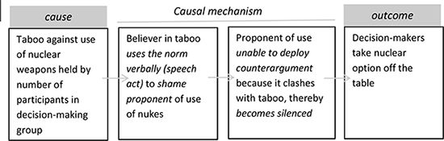

<!DOCTYPE html>
<html lang="en">
  <head>
    <meta charset="utf-8" />
    <meta name="viewport" content="width=device-width, initial-scale=1.0, maximum-scale=1.0, user-scalable=no" />

    <title></title>
    <link rel="stylesheet" href="dist/reveal.css" />
    <link rel="stylesheet" href="css/stefano.css" id="theme" />
    <link rel="stylesheet" href="plugin/highlight/zenburn.css" />
	<link rel="stylesheet" href="css/layout.css" />
	<link rel="stylesheet" href="plugin/customcontrols/style.css">

	<link rel="stylesheet" href="plugin/reveal-pointer/pointer.css" />


    <script defer src="dist/fontawesome/all.min.js"></script>

	<script type="text/javascript">
		var forgetPop = true;
		function onPopState(event) {
			if(forgetPop){
				forgetPop = false;
			} else {
				parent.postMessage(event.target.location.href, "app://obsidian.md");
			}
        }
		window.onpopstate = onPopState;
		window.onmessage = event => {
			if(event.data == "reload"){
				window.document.location.reload();
			}
			forgetPop = true;
		}

		function fitElements(){
			const itemsToFit = document.getElementsByClassName('fitText');
			for (const item in itemsToFit) {
				if (Object.hasOwnProperty.call(itemsToFit, item)) {
					var element = itemsToFit[item];
					fitElement(element,1, 1000);
					element.classList.remove('fitText');
				}
			}
		}

		function fitElement(element, start, end){

			let size = (end + start) / 2;
			element.style.fontSize = `${size}px`;

			if(Math.abs(start - end) < 1){
				while(element.scrollHeight > element.offsetHeight){
					size--;
					element.style.fontSize = `${size}px`;
				}
				return;
			}

			if(element.scrollHeight > element.offsetHeight){
				fitElement(element, start, size);
			} else {
				fitElement(element, size, end);
			}		
		}


		document.onreadystatechange = () => {
			fitElements();
			if (document.readyState === 'complete') {
				if (window.location.href.indexOf("?export") != -1){
					parent.postMessage(event.target.location.href, "app://obsidian.md");
				}
				if (window.location.href.indexOf("print-pdf") != -1){
					let stateCheck = setInterval(() => {
						clearInterval(stateCheck);
						window.print();
					}, 250);
				}
			}
	};


        </script>
  </head>
  <body>
    <div class="reveal">
      <div class="slides"><section ><section data-markdown><script type="text/template"><!-- .slide: class="drop" -->
<div class="" style="position: absolute; left: 0px; top: 0px; height: 700px; width: 960px; min-height: 700px; display: flex; flex-direction: column; align-items: center; justify-content: center" absolute="true">

# Choosing a Research Design

Stefano Pagliari

IP3017 UG Dissertation
</div></script></section><section data-markdown><script type="text/template"><!-- .slide: class="drop" -->
<div class="" style="position: absolute; left: 0px; top: 0px; height: 700px; width: 960px; min-height: 700px; display: flex; flex-direction: column; align-items: center; justify-content: center" absolute="true">

## How do you know whether your explanation is right?
</div></script></section><section data-markdown><script type="text/template"><!-- .slide: class="drop" -->
<div class="" style="position: absolute; left: 0px; top: 0px; height: 700px; width: 960px; min-height: 700px; display: flex; flex-direction: column; align-items: center; justify-content: center" absolute="true">

## Research Design
- &shy;<!-- .element: class="fragment" data-fragment-index="1" -->Overall **strategy** you will employ to investigate your argument
- &shy;<!-- .element: class="fragment" data-fragment-index="2" -->**Research design** determines
	- &shy;<!-- .element: class="fragment" data-fragment-index="3" -->Sort of **evidence** you need to investigate your hypothesis and how this will be **collected** & **analyzed**.
	- &shy;<!-- .element: class="fragment" data-fragment-index="4" -->Extent to which we can be confident that the **explanation** is correct and **alternative interpretations** are ruled out *(internal validity)*
	- &shy;<!-- .element: class="fragment" data-fragment-index="5" -->Extent to which results from a study can be **generalized** to other similar situations *(external validity)*.
</div></script></section><section data-markdown><script type="text/template"><!-- .slide: class="drop" -->
<div class="" style="position: absolute; left: 0px; top: 0px; height: 700px; width: 960px; min-height: 700px; display: flex; flex-direction: column; align-items: center; justify-content: center" absolute="true">

## Type of Research Design


<div class="mermaid">

flowchart TD
A[Research Design]
B[Experimentation]
C[Observation]
D[Large N]
E[Small N <br> Case Study]
F[Single <br> Case Study]
G[Comparative <br> Case Studies]

A --> B
A --> C
C --> D
C --> E
E --> F
E --> G


</div>
</div></script></section></section><section ><section data-markdown><script type="text/template"><!-- .slide: class="drop" -->
<div class="" style="position: absolute; left: 0px; top: 0px; height: 700px; width: 960px; min-height: 700px; display: flex; flex-direction: column; align-items: center; justify-content: center" absolute="true">

## Experiments
- &shy;<!-- .element: class="fragment" data-fragment-index="1" -->Experimenter starts by establishing 2 groups (**experimental** group vs. control **group**)
- &shy;<!-- .element: class="fragment" data-fragment-index="2" -->**Randomization**: the researcher randomly assigns individuals to the groups.
- &shy;<!-- .element: class="fragment" data-fragment-index="3" -->The researcher “administers” the **treatment** to the experimental group
- &shy;<!-- .element: class="fragment" data-fragment-index="4" -->Researcher observes the impact of the treatment and **compares** with the control group
</div></script></section><section data-markdown><script type="text/template"><!-- .slide: class="drop" -->
<div class="" style="position: absolute; left: 0px; top: 0px; height: 700px; width: 960px; min-height: 700px; display: flex; flex-direction: column; align-items: center; justify-content: center" absolute="true">

### Experiments in Social Sciences
- &shy;<!-- .element: class="fragment" data-fragment-index="1" -->**Laboratory Experiments**
	- &shy;<!-- .element: class="fragment" data-fragment-index="2" -->Researcher has as much control as possible over the environment to which subjects are exposed
	- &shy;<!-- .element: class="fragment" data-fragment-index="3" -->Uncertainty on whether the findings from the lab may be generalized to real world settings
- &shy;<!-- .element: class="fragment" data-fragment-index="4" -->**Field experiments**
	- &shy;<!-- .element: class="fragment" data-fragment-index="5" -->Apply logic of randomization and variable manipulation to real-world environments
	- &shy;<!-- .element: class="fragment" data-fragment-index="6" -->Higher external validity but lower internal validity
- &shy;<!-- .element: class="fragment" data-fragment-index="7" -->**Natural experiments**
	- &shy;<!-- .element: class="fragment" data-fragment-index="8" -->Naturally occurring event as “interventions”
	- &shy;<!-- .element: class="fragment" data-fragment-index="9" -->E.g. Jared Diamond employed a “natural experiment of borders” to explain differences between Haiti and Dominican Republic
</div></script></section></section><section ><section data-markdown><script type="text/template"><!-- .slide: class="drop" -->
<div class="" style="position: absolute; left: 0px; top: 0px; height: 700px; width: 960px; min-height: 700px; display: flex; flex-direction: column; align-items: center; justify-content: center" absolute="true">

## Observational Studies


<div class="mermaid">

flowchart TD
A[Research Design]
B[Experimentation]
C[Observation]
D[Large N]
E[Small N <br> Case Study]
F[Single <br> Case Study]
G[Comparative <br> Case Studies]

A --> B
A --> C
C --> D
C --> E
E --> F
E --> G


</div>
</div></script></section><section data-markdown><script type="text/template"><!-- .slide: class="drop" -->
<div class="" style="position: absolute; left: 0px; top: 0px; height: 700px; width: 960px; min-height: 700px; display: flex; flex-direction: column; align-items: center; justify-content: center" absolute="true">

### Observation vs. Experimentation

- &shy;<!-- .element: class="fragment" data-fragment-index="1" -->**Experiments**  
	- &shy;<!-- .element: class="fragment" data-fragment-index="2" -->Investigators exposes external stimulus on the object of the study
	- &shy;<!-- .element: class="fragment" data-fragment-index="3" -->E.g. chemistry, biology, physics
- &shy;<!-- .element: class="fragment" data-fragment-index="4" -->**Observation**
	- &shy;<!-- .element: class="fragment" data-fragment-index="5" -->Investigator passively observes the data without imposing an external stimulus on the situation
	- &shy;<!-- .element: class="fragment" data-fragment-index="6" -->E.g. astronomy, geology, paleontology
</div></script></section></section><section ><section data-markdown><script type="text/template"><!-- .slide: class="drop" -->
<div class="" style="position: absolute; left: 0px; top: 0px; height: 700px; width: 960px; min-height: 700px; display: flex; flex-direction: column; align-items: center; justify-content: center" absolute="true">

## Large-N Analysis

- &shy;<!-- .element: class="fragment" data-fragment-index="1" -->Large number of observations
- &shy;<!-- .element: class="fragment" data-fragment-index="2" -->**Quantitative** data
	- &shy;<!-- .element: class="fragment" data-fragment-index="3" -->Based on datasets that contain numerical representations of key variables for each observation.
- &shy;<!-- .element: class="fragment" data-fragment-index="4" -->Lack of in-depth information about each observation
- &shy;<!-- .element: class="fragment" data-fragment-index="5" -->Lack of manipulation of the independent variable
	- &shy;<!-- .element: class="fragment" data-fragment-index="6" -->Reliance on statistical techniques to isolate the impact of the IV (holding relevant extraneous factors constant)
</div></script></section><section data-markdown><script type="text/template"><!-- .slide: class="drop" -->
<div class="" style="position: absolute; left: 0px; top: 0px; height: 700px; width: 960px; min-height: 700px; display: flex; flex-direction: column; align-items: center; justify-content: center" absolute="true">

### Types of Large-N analysis

- &shy;<!-- .element: class="fragment" data-fragment-index="1" -->**Cross-Sectional** Designs
	- &shy;<!-- .element: class="fragment" data-fragment-index="2" -->Sample, or cross-section of a population at a single point in time (e.g. poll of voters).
- &shy;<!-- .element: class="fragment" data-fragment-index="3" -->**Longitudinal** (or Time Series) Designs
	- &shy;<!-- .element: class="fragment" data-fragment-index="4" -->Measures of variables at different points in time in order to explore changes or trends over time
</div></script></section></section><section ><section data-markdown><script type="text/template"><!-- .slide: class="drop" -->
<div class="" style="position: absolute; left: 0px; top: 0px; height: 700px; width: 960px; min-height: 700px; display: flex; flex-direction: column; align-items: center; justify-content: center" absolute="true">

## Case Study Research


<div class="mermaid">

flowchart TD
A[Research Design]
B[Experimentation]
C[Observation]
D[Large N]
E[Small N <br> Case Study]
F[Single <br> Case Study]
G[Comparative <br> Case Studies]

A --> B
A --> C
C --> D
C --> E
E --> F
E --> G


</div>
</div></script></section><section data-markdown><script type="text/template"><!-- .slide: class="drop" -->
<div class="" style="position: absolute; left: 0px; top: 0px; height: 700px; width: 960px; min-height: 700px; display: flex; flex-direction: column; align-items: center; justify-content: center" absolute="true">

### What is a Case Study?

- &shy;<!-- .element: class="fragment" data-fragment-index="1" -->Intensive study of a single unit for the purpose of understanding a larger class of (similar) units (Gerring, 2004, 342) 
- &shy;<!-- .element: class="fragment" data-fragment-index="2" -->Usually associated with qualitative data and rich description
</div></script></section><section data-markdown><script type="text/template"><!-- .slide: class="drop" -->
<div class="" style="position: absolute; left: 0px; top: 0px; height: 700px; width: 960px; min-height: 700px; display: flex; flex-direction: column; align-items: center; justify-content: center" absolute="true">

### What is something a case of?

+ It is not enough to observe a social phenomenon or historical event to declare them to be ‘cases.’
- &shy;<!-- .element: class="fragment" data-fragment-index="1" -->E.g. What is the Brexit referendum a case of?
- &shy;<!-- .element: class="fragment" data-fragment-index="2" -->E.g. What is the Islamic State a case of?
</div></script></section><section data-markdown><script type="text/template"><!-- .slide: class="drop" -->
<div class="" style="position: absolute; left: 0px; top: 0px; height: 700px; width: 960px; min-height: 700px; display: flex; flex-direction: column; align-items: center; justify-content: center" absolute="true">

### What is a Case Study for?

- &shy;<!-- .element: class="fragment" data-fragment-index="1" -->**Description**
	- &shy;<!-- .element: class="fragment" data-fragment-index="2" -->Purely descriptive (or idiographic) case studies provide a thick description of a particular event or phenomenon case.
- &shy;<!-- .element: class="fragment" data-fragment-index="3" -->**Generate New Theory**
	- &shy;<!-- .element: class="fragment" data-fragment-index="4" -->The generation of new hypotheses and theory often develops from the analysis of particular case study
- &shy;<!-- .element: class="fragment" data-fragment-index="5" -->**Test an Existing Theory**
	- &shy;<!-- .element: class="fragment" data-fragment-index="6" -->Apply theory developed in one context to another one in order to assess whether original theory ‘works’
</div></script></section><section data-markdown><script type="text/template"><!-- .slide: class="drop" -->
<div class="" style="position: absolute; left: 0px; top: 0px; height: 700px; width: 960px; min-height: 700px; display: flex; flex-direction: column; align-items: center; justify-content: center" absolute="true">

### Using Case Studies to Test Theories

- &shy;<!-- .element: class="fragment" data-fragment-index="1" -->Congruence Testing
- &shy;<!-- .element: class="fragment" data-fragment-index="2" -->Process Tracing
- &shy;<!-- .element: class="fragment" data-fragment-index="3" -->Case Comparison
</div></script></section></section><section ><section data-markdown><script type="text/template"><!-- .slide: class="drop" -->
<div class="" style="position: absolute; left: 0px; top: 0px; height: 700px; width: 960px; min-height: 700px; display: flex; flex-direction: column; align-items: center; justify-content: center" absolute="true">

### Congruence Testing

- &shy;<!-- .element: class="fragment" data-fragment-index="1" -->Investigator explores the case looking for congruence or incongruence between:
	- &shy;<!-- .element: class="fragment" data-fragment-index="2" -->**values observed** on the DV (phenomenon you are explaining) and IV (explanation)
	- &shy;<!-- .element: class="fragment" data-fragment-index="3" -->**values predicted** by the hypothesis.
</div></script></section><section data-markdown><script type="text/template"><!-- .slide: class="drop" -->
<div class="" style="position: absolute; left: 0px; top: 0px; height: 700px; width: 960px; min-height: 700px; display: flex; flex-direction: column; align-items: center; justify-content: center" absolute="true">

### Example of Congruence Testing: Theory of Relativity
- Scientists tested Albert Einstein's general theory of relativity with a single case study: the observation of the solar eclipse (29 May 1919).

</div></script></section><section data-markdown><script type="text/template"><!-- .slide: class="drop" -->
<div class="" style="position: absolute; left: 0px; top: 0px; height: 700px; width: 960px; min-height: 700px; display: flex; flex-direction: column; align-items: center; justify-content: center" absolute="true">

### Example of Congruence Testing

- &shy;<!-- .element: class="fragment" data-fragment-index="1" -->**Hypothesis:** economic downturns cause scapegoating of ethnic minorities
- &shy;<!-- .element: class="fragment" data-fragment-index="2" -->**Test 1:** explore cases of downturns (for example, the US in the 1930s) asking if ethnic scapegoating was above normal in these cases.
- &shy;<!-- .element: class="fragment" data-fragment-index="3" -->**Test 2:** explore cases of prosperity (the United States in the 1960s) and ask if ethnic scapegoating was below normal.
- &shy;<!-- .element: class="fragment" data-fragment-index="4" -->**Problem:** how to rule-out competing explanations?
</div></script></section><section data-markdown><script type="text/template"><!-- .slide: class="drop" -->
<div class="" style="position: absolute; left: 0px; top: 0px; height: 700px; width: 960px; min-height: 700px; display: flex; flex-direction: column; align-items: center; justify-content: center" absolute="true">

### Process Tracing

- &shy;<!-- .element: class="fragment" data-fragment-index="1" -->Not just a matter of showing how the variable at the center of your explanation (independent variable) is associated with the outcome of the case (dependent variable).
- &shy;<!-- .element: class="fragment" data-fragment-index="2" -->Investigator explores the **chain of events** by which the explanation (independent variable) is linked to the outcome of the case (dependent variable).
	- &shy;<!-- .element: class="fragment" data-fragment-index="3" -->Cause-effect link is unwrapped and divided into smaller steps
	- &shy;<!-- .element: class="fragment" data-fragment-index="4" -->The investigator looks for observable evidence of each step.
</div></script></section><section data-markdown><script type="text/template"><!-- .slide: class="drop" -->
<div class="" style="position: absolute; left: 0px; top: 0px; height: 700px; width: 960px; min-height: 700px; display: flex; flex-direction: column; align-items: center; justify-content: center" absolute="true">

### Example: Testing the Strength of Norms against Nuclear Weapons




<small class="caption">Source: Derek Beach (2017. "Process-Tracing Methods in Social Science" </small>
</div></script></section></section><section ><section data-markdown><script type="text/template"><!-- .slide: class="drop" -->
<div class="" style="position: absolute; left: 0px; top: 0px; height: 700px; width: 960px; min-height: 700px; display: flex; flex-direction: column; align-items: center; justify-content: center" absolute="true">

### (Extra) Types of Process Tracing
  
- &shy;<!-- .element: class="fragment" data-fragment-index="1" -->Inductive: 
	- &shy;<!-- .element: class="fragment" data-fragment-index="2" -->Broad search for sequential steps necessary for an event to occur (analogous to detective work)
- &shy;<!-- .element: class="fragment" data-fragment-index="3" -->Deductive: 
	- &shy;<!-- .element: class="fragment" data-fragment-index="4" -->Sequence of within-case hypothesis tests guided by the theory
</div></script></section><section data-markdown><script type="text/template"><!-- .slide: class="drop" -->
<div class="" style="position: absolute; left: 0px; top: 0px; height: 700px; width: 960px; min-height: 700px; display: flex; flex-direction: column; align-items: center; justify-content: center" absolute="true">

### (Extra) Process Tracing Tests


</div></script></section></section><section ><section data-markdown><script type="text/template"><!-- .slide: class="drop" -->
<div class="" style="position: absolute; left: 0px; top: 0px; height: 700px; width: 960px; min-height: 700px; display: flex; flex-direction: column; align-items: center; justify-content: center" absolute="true">

## Case Comparison

- &shy;<!-- .element: class="fragment" data-fragment-index="1" -->Investigator explores two or more cases, asking if values are congruent with the theory's predictions.
</div></script></section><section data-markdown><script type="text/template"><!-- .slide: class="drop" -->
<div class="" style="position: absolute; left: 0px; top: 0px; height: 700px; width: 960px; min-height: 700px; display: flex; flex-direction: column; align-items: center; justify-content: center" absolute="true">

### Why comparing Case Studies?
- &shy;<!-- .element: class="fragment" data-fragment-index="1" -->To test a single theory more than once.
- &shy;<!-- .element: class="fragment" data-fragment-index="2" -->To identify explanations which could not be deduced from a single case
- &shy;<!-- .element: class="fragment" data-fragment-index="3" -->To avoid the risk of *false uniqueness* (focus on the specificity of one case, entirely ignoring the general forces at work)
- &shy;<!-- .element: class="fragment" data-fragment-index="4" -->To avoid risk of *false universalism* (assumption that the theory tested in one country/ context will be equally applicable to other countries).
</div></script></section><section data-markdown><script type="text/template"><!-- .slide: class="drop" -->
<div class="" style="position: absolute; left: 0px; top: 0px; height: 700px; width: 960px; min-height: 700px; display: flex; flex-direction: column; align-items: center; justify-content: center" absolute="true">

### What is being compared? Examples

- &shy;<!-- .element: class="fragment" data-fragment-index="1" -->Countries or Units within countries (e.g.regions)
- &shy;<!-- .element: class="fragment" data-fragment-index="2" -->Organizations, political parties, etc..  
- &shy;<!-- .element: class="fragment" data-fragment-index="3" -->Wars, peacekeeping operations, etc...  
- &shy;<!-- .element: class="fragment" data-fragment-index="4" -->Financial crises, economic policies, etc..
</div></script></section><section data-markdown><script type="text/template"><!-- .slide: class="drop" -->
<div class="" style="position: absolute; left: 0px; top: 0px; height: 700px; width: 960px; min-height: 700px; display: flex; flex-direction: column; align-items: center; justify-content: center" absolute="true">

### Type of Comparisons
- &shy;<!-- .element: class="fragment" data-fragment-index="1" -->**Between-case** comparisons
- &shy;<!-- .element: class="fragment" data-fragment-index="2" -->**Across-time** comparisons  
- &shy;<!-- .element: class="fragment" data-fragment-index="3" -->**Within-case** comparisons at a lower level of analysis
</div></script></section><section data-markdown><script type="text/template"><!-- .slide: class="drop" -->
<div class="" style="position: absolute; left: 0px; top: 0px; height: 700px; width: 960px; min-height: 700px; display: flex; flex-direction: column; align-items: center; justify-content: center" absolute="true">

### General Principles for Comparison

- &shy;<!-- .element: class="fragment" data-fragment-index="1" -->Individual cases **must be comparable** (e.g.states sharing same level of development).
- &shy;<!-- .element: class="fragment" data-fragment-index="2" -->We are not interested in comparing two or  more cases that are exactly the same in every respect or completely different in every respect.
- &shy;<!-- .element: class="fragment" data-fragment-index="3" -->Most-similar or most-different cases(nextweek)
</div></script></section><section data-markdown><script type="text/template"><!-- .slide: class="drop" -->
<div class="" style="position: absolute; left: 0px; top: 0px; height: 700px; width: 960px; min-height: 700px; display: flex; flex-direction: column; align-items: center; justify-content: center" absolute="true">

### Strengths and Weaknesses of Case Study Analyis

- &shy;<!-- .element: class="fragment" data-fragment-index="1" -->**Strengths** of case study  
	- &shy;<!-- .element: class="fragment" data-fragment-index="2" -->By focusing on a single case, the case can be **intensively** examined.
	- &shy;<!-- .element: class="fragment" data-fragment-index="3" -->Assessing whether the association between our identified explanation (IV) and the phenomenon we are explaining (DV) is really **causal**
- &shy;<!-- .element: class="fragment" data-fragment-index="4" -->**Weaknesses** of case study  
	- &shy;<!-- .element: class="fragment" data-fragment-index="5" -->Problem of **generalization:** do the findings apply beyond that unique case?
	- &shy;<!-- .element: class="fragment" data-fragment-index="6" -->Difficult to make robust generalizations when we have a small N
</div></script></section></section><section  data-markdown><script type="text/template"><!-- .slide: class="drop" -->
<div class="" style="position: absolute; left: 0px; top: 0px; height: 700px; width: 960px; min-height: 700px; display: flex; flex-direction: column; align-items: center; justify-content: center" absolute="true">

## Conclusion

- &shy;<!-- .element: class="fragment" data-fragment-index="1" -->Which Research Design is superior?
	- &shy;<!-- .element: class="fragment" data-fragment-index="2" -->**Experiments:** Can be best to identify causal relation but they are seldom feasible in social science.
	- &shy;<!-- .element: class="fragment" data-fragment-index="3" -->**Large-n studies:** Can be best if we want to test a hypothesis and if we have many well-recorded cases to study.
	- &shy;<!-- .element: class="fragment" data-fragment-index="4" -->**Case studies:** can be best to achieve in-depth understanding of an issue but limited capacity to generalized
- &shy;<!-- .element: class="fragment" data-fragment-index="5" -->**Choice** of research design should be based on
	- &shy;<!-- .element: class="fragment" data-fragment-index="6" -->The nature of the **question**  
	- &shy;<!-- .element: class="fragment" data-fragment-index="7" -->The structure of the **data** available  
	- &shy;<!-- .element: class="fragment" data-fragment-index="8" -->**Resources** and time available
</div></script></section></div>
    </div>

    <script src="dist/reveal.js"></script>

    <script src="plugin/markdown/markdown.js"></script>
    <script src="plugin/highlight/highlight.js"></script>
    <script src="plugin/zoom/zoom.js"></script>
    <script src="plugin/notes/notes.js"></script>
    <script src="plugin/math/math.js"></script>
	<script src="plugin/mermaid/mermaid.js"></script>
	<script src="plugin/chart/chart.min.js"></script>
	<script src="plugin/chart/plugin.js"></script>
	<script src="plugin/menu/menu.js"></script>
	<script src="plugin/customcontrols/plugin.js"></script>
	<script src="plugin/reveal-pointer/pointer.js"></script>

    <script>
      function extend() {
        var target = {};
        for (var i = 0; i < arguments.length; i++) {
          var source = arguments[i];
          for (var key in source) {
            if (source.hasOwnProperty(key)) {
              target[key] = source[key];
            }
          }
        }
        return target;
      }

	  function isLight(color) {
		let hex = color.replace('#', '');

		// convert #fff => #ffffff
		if(hex.length == 3){
			hex = `${hex[0]}${hex[0]}${hex[1]}${hex[1]}${hex[2]}${hex[2]}`;
		}

		const c_r = parseInt(hex.substr(0, 2), 16);
		const c_g = parseInt(hex.substr(2, 2), 16);
		const c_b = parseInt(hex.substr(4, 2), 16);
		const brightness = ((c_r * 299) + (c_g * 587) + (c_b * 114)) / 1000;
		return brightness > 155;
	}

	var bgColor = getComputedStyle(document.documentElement).getPropertyValue('--r-background-color').trim();
	var isLight = isLight(bgColor);

	if(isLight){
		document.body.classList.add('has-light-background');
	} else {
		document.body.classList.add('has-dark-background');
	}

      // default options to init reveal.js
      var defaultOptions = {
        controls: true,
        progress: true,
        history: true,
        center: true,
        transition: 'default', // none/fade/slide/convex/concave/zoom
        plugins: [
          RevealMarkdown,
          RevealHighlight,
          RevealZoom,
          RevealNotes,
          RevealMath.MathJax3,
		  RevealMermaid,
		  RevealChart,
		  RevealCustomControls,
		  RevealMenu,
	      RevealPointer,
        ],


    	allottedTime: 120 * 1000,

		mathjax3: {
			mathjax: 'plugin/math/mathjax/tex-mml-chtml.js',
		},
		markdown: {
		  gfm: true,
		  mangle: true,
		  pedantic: false,
		  smartLists: false,
		  smartypants: false,
		},

		mermaid: {
			theme: isLight ? 'default' : 'dark',
		},

		customcontrols: {
			controls: [
				{id: 'toggle-overview',
				title: 'Toggle overview (O)',
				icon: '<i class="fa fa-th"></i>',
				action: 'Reveal.toggleOverview();'
				},
			]
		},
		menu: {
			loadIcons: false
		}
      };

      // options from URL query string
      var queryOptions = Reveal().getQueryHash() || {};

      var options = extend(defaultOptions, {"width":960,"height":700,"margin":0.04,"controls":true,"progress":true,"slideNumber":true,"transition":"fade","transitionSpeed":"slow"}, queryOptions);
    </script>

    <script>
      Reveal.initialize(options);
    </script>
  </body>

  <!-- created with Advanced Slides -->
</html>
